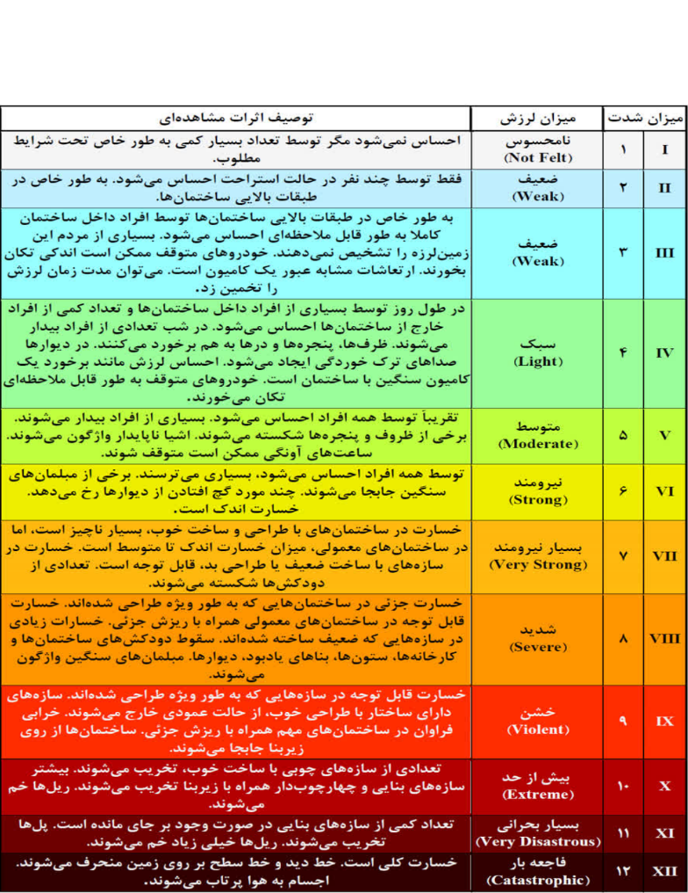

بازگشت
بازگشت

شدت زمینلرزه:
برای سطحبندی شدت لرزش ناشی از زمینلرزه و اثرات مشاهدهای آن بر انسانها و ساختمانها از مقیاس شدت زمینلرزه استفاده میشود.
در حال حاضر مقیاس شدت مِرکالی اصلاح شده (MMI) به عنوان متداولترین مقیاس شدت مورد استفاده است، که توسط وود و نیومَن (زمینلرزهشناسان آمریکایی) در سال 1931 میلادی منتشر شد. این مقیاس شدت دربرگیرنده دوازده درجه متفاوت از شدت زمینلرزه است و با اعداد رومی نمایش داده میشود.